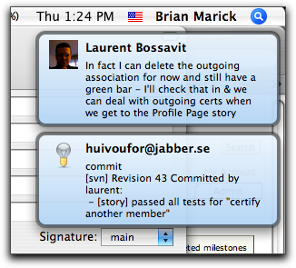
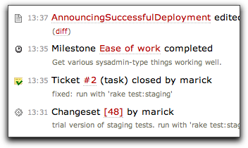

Gossip is a Ruby library for sending messages to people through various channels. It was originally written by Brian Marick to help himself and another developer on a distributed project keep in sync:
The picture on the right shows the arrival of a Jabber message alerting me to a checkin by my codeveloper an ocean away. Below, there's a picture showing that our deployment script adds a notification to our Trac project timeline. Since the timeline has an RSS feed, at the beginning of the day, I can easily see what happened in France while I was sleeping.
In addition to Trac and Jabber, Gossip currently can talk to Campfire, a mail server (SMTP), and Twitter.
Gossip comes bundled with three utility scripts. One just relays your message to all the destinations. Another sends out a message about a Subversion commit. The third watches a command run, then broadcasts command output and how long it took. (This last is a derivative of the "watchdog" program from Mr. Marick's Everyday Scripting with Ruby.)
Gossip scripts are, out of the box, highly configurable. Each user (real or virtual) can override defaults with configuration files (YAML or XML), environment variables, or command-line arguments. (It uses the user-choices gem.) New scripts should be relatively easy to write.
Gossip makes use of XMPP4R (Lucas Nussbaum, Stephan Maka, Kirill A. Shutemov, and others), Tinder (Daniel Morrison, Brandon Keepers, and others), Snitch (John Nunemaker and others), and Twitter (John Nunemaker). It was created by Brian Marick. At this writing (February 2012), maintenance is being taken up by Lawrence Leonard Gilbert.